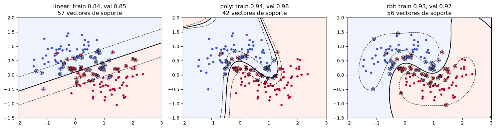
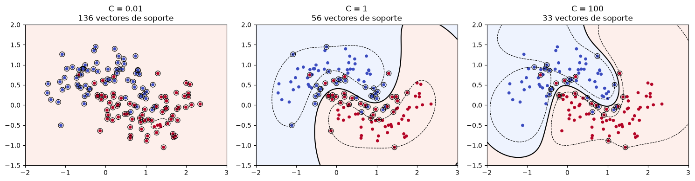
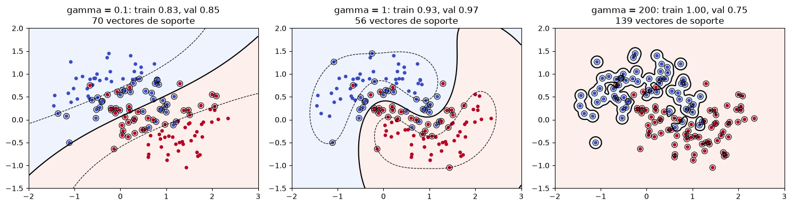

import matplotlib.pyplot as plt
import numpy as np
import pandas as pd
from sklearn.metrics.pairwise import rbf_kernel
from sklearn.model_selection import GridSearchCV, train_test_split
from sklearn.pipeline import make_pipeline
from sklearn.preprocessing import StandardScaler
from sklearn.svm import SVCLaboratorio: SVM con margen suave y selección de kernel
En este laboratorio usamos SVC de scikit-learn, que implementa la SVM de margen suave:
\[\min_{w, b, \xi} \; \frac{1}{2}\|w\|^2 + C \sum_{i=1}^m \xi_i \quad \text{sujeto a} \quad y^{(i)}(w^T \phi(x^{(i)}) + b) \ge 1 - \xi_i, \; \xi_i \ge 0.\]
Sus parámetros principales son C, kernel y, para el kernel gaussiano, gamma \(= 1/(2\sigma^2)\).
1. Visualizar la frontera
Usamos datos en forma de medialuna, que no se pueden separar con una recta. La función graficar dibuja la frontera (\(w^T\phi(x) + b = 0\)), las rectas del margen (\(\pm 1\)) y marca los vectores de soporte.
datos = pd.read_csv("moons.csv")
X, y = datos[["x1", "x2"]].to_numpy(), datos["y"].to_numpy()
X_train, X_test, y_train, y_test = train_test_split(X, y, test_size=0.3, random_state=0)
def graficar(modelo, X, y, ax, titulo=""):
xx, yy = np.meshgrid(np.linspace(-2, 3, 300), np.linspace(-1.5, 2, 300))
Z = modelo.decision_function(np.c_[xx.ravel(), yy.ravel()]).reshape(xx.shape)
ax.contourf(xx, yy, Z > 0, alpha=0.15, cmap="coolwarm")
ax.contour(xx, yy, Z, levels=[-1, 0, 1], colors="k", linestyles=["--", "-", "--"], linewidths=[0.8, 1.5, 0.8])
ax.scatter(X[:, 0], X[:, 1], c=y, cmap="coolwarm", s=15)
sv = modelo.support_vectors_
ax.scatter(sv[:, 0], sv[:, 1], s=60, facecolors="none", edgecolors="k", linewidths=0.8)
ax.set_title(f"{titulo}\n{len(sv)} vectores de soporte")1.1. Tres kernels
Comparamos el kernel lineal, el polinomial \(K(x, z) = (\gamma\, x^T z + c)^3\) y el gaussiano.
kernels = [
SVC(kernel="linear", C=1),
SVC(kernel="poly", degree=4, coef0=1, C=1),
SVC(kernel="rbf", gamma=1, C=1),
]
fig, axes = plt.subplots(1, 3, figsize=(15, 4))
for modelo, ax in zip(kernels, axes):
modelo.fit(X_train, y_train)
graficar(modelo, X_train, y_train, ax,
f"{modelo.kernel}: train {modelo.score(X_train, y_train):.2f}, val {modelo.score(X_test, y_test):.2f}")
plt.tight_layout()
1.2. Efecto de C
Con C pequeño el margen es ancho y muchos ejemplos quedan dentro de él. Con C grande nos acercamos al margen duro.
Pregunta: ¿cómo cambia el número de vectores de soporte con C? ¿Por qué?
fig, axes = plt.subplots(1, 3, figsize=(15, 4))
for C, ax in zip([0.01, 1, 100], axes):
modelo = SVC(kernel="rbf", gamma=1, C=C).fit(X_train, y_train)
graficar(modelo, X_train, y_train, ax, f"C = {C}")
plt.tight_layout()
1.3. Efecto de gamma (es decir, de \(\sigma\))
Pregunta: ¿con qué valor de gamma hay overfitting? Compare la exactitud de entrenamiento y de validación.
fig, axes = plt.subplots(1, 3, figsize=(15, 4))
for gamma, ax in zip([0.1, 1, 200], axes):
modelo = SVC(kernel="rbf", gamma=gamma, C=1).fit(X_train, y_train)
graficar(modelo, X_train, y_train, ax,
f"gamma = {gamma}: train {modelo.score(X_train, y_train):.2f}, val {modelo.score(X_test, y_test):.2f}")
plt.tight_layout()
2. Conexión con el problema dual
Después de entrenar, SVC guarda:
support_vectors_: los ejemplos con \(\alpha_i > 0\).dual_coef_: los productos \(\alpha_i y^{(i)}\) (con \(y \in \{-1, 1\}\)) de esos ejemplos.intercept_: el valor de \(b\).
Verifiquemos que la predicción es \(\sum_i \alpha_i y^{(i)} K(x^{(i)}, x) + b\) y que \(0 \le \alpha_i \le C\).
C, gamma = 1, 1
modelo = SVC(kernel="rbf", gamma=gamma, C=C).fit(X_train, y_train)
alpha_y = modelo.dual_coef_.ravel()
K = rbf_kernel(X_test, modelo.support_vectors_, gamma=gamma)
score_manual = K @ alpha_y + modelo.intercept_[0]
print("¿Coincide con decision_function?", np.allclose(score_manual, modelo.decision_function(X_test)))
alpha = np.abs(alpha_y)
print(f"Vectores de soporte: {len(alpha)} de {len(X_train)}")
print(f"Con alpha = C (dentro del margen o mal clasificados): {np.sum(np.isclose(alpha, C))}")
print(f"Con 0 < alpha < C (sobre el margen): {np.sum(alpha < C - 1e-6)}")
print("Suma de alpha_i y_i (debe ser 0):", round(alpha_y.sum(), 10))¿Coincide con decision_function? True
Vectores de soporte: 56 de 140
Con alpha = C (dentro del margen o mal clasificados): 43
Con 0 < alpha < C (sobre el margen): 13
Suma de alpha_i y_i (debe ser 0): 0.03. Selección del kernel y sus parámetros
Usamos el dataset de cáncer de mama de Wisconsin (30 features, 569 ejemplos). Escogemos el kernel, C y gamma con validación cruzada sobre el conjunto de entrenamiento, y usamos el conjunto de prueba una sola vez al final.
El Pipeline estandariza las features dentro de cada partición de la validación cruzada, usando solo los datos de entrenamiento de esa partición, para evitar data leakage.
datos = pd.read_csv("breast_cancer.csv")
X, y = datos.drop(columns="target").to_numpy(), datos["target"].to_numpy()
X_train, X_test, y_train, y_test = train_test_split(X, y, test_size=0.25, stratify=y, random_state=0)
pipeline = make_pipeline(StandardScaler(), SVC())
grilla = [
{"svc__kernel": ["linear"], "svc__C": [0.01, 0.1, 1, 10, 100]},
{"svc__kernel": ["poly"], "svc__degree": [2, 3], "svc__coef0": [1], "svc__C": [0.01, 0.1, 1, 10, 100]},
{"svc__kernel": ["rbf"], "svc__C": [0.01, 0.1, 1, 10, 100], "svc__gamma": [0.001, 0.01, 0.1, 1]},
]
busqueda = GridSearchCV(pipeline, grilla, cv=5).fit(X_train, y_train)
print("Mejores parámetros:", busqueda.best_params_)
print(f"Exactitud de validación cruzada: {busqueda.best_score_:.3f}")Mejores parámetros: {'svc__C': 0.1, 'svc__kernel': 'linear'}
Exactitud de validación cruzada: 0.988Mejor resultado de cada kernel:
res = pd.DataFrame(busqueda.cv_results_)
res["kernel"] = res["param_svc__kernel"]
mejores = res.loc[res.groupby("kernel")["mean_test_score"].idxmax(), ["kernel", "params", "mean_test_score"]]
mejores| kernel | params | mean_test_score | |
|---|---|---|---|
| 1 | linear | {'svc__C': 0.1, 'svc__kernel': 'linear'} | 0.988263 |
| 9 | poly | {'svc__C': 1, 'svc__coef0': 1, 'svc__degree': ... | 0.983557 |
| 31 | rbf | {'svc__C': 100, 'svc__gamma': 0.001, 'svc__ker... | 0.988263 |
Evaluación final, una sola vez, sobre el conjunto de prueba:
print(f"Exactitud de prueba: {busqueda.score(X_test, y_test):.3f}")Exactitud de prueba: 0.958Preguntas:
- ¿Qué kernel ganó? ¿La diferencia con los demás es grande? Con 30 features y pocos ejemplos, ¿le sorprende el resultado?
- Repita la búsqueda sin
StandardScaler. ¿Qué kernel se ve más afectado y por qué? - ¿Por qué no es correcto escoger
Cygammamirando la exactitud sobre el conjunto de prueba?